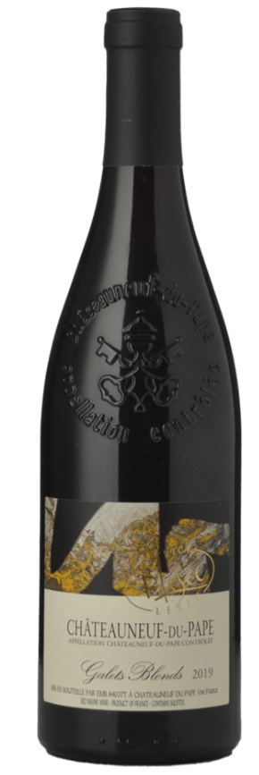
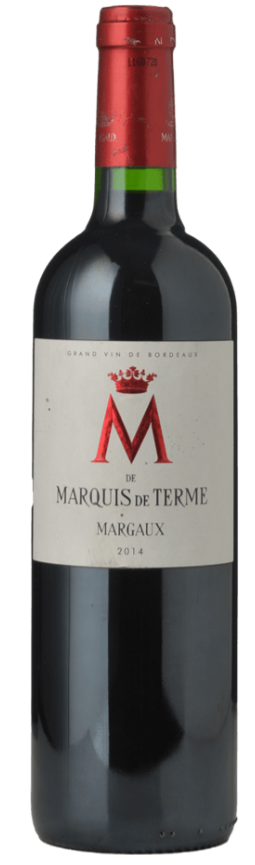
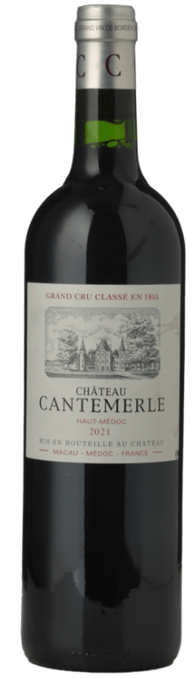

Top
Pick

Château Les Cruzelles 2021 – $76
Lalande-de-Pomerol, Bordeaux
Grapes: Merlot, Cabernet Franc
Retail France (AUD): • Retail Australia:
Elegant and fresh right-bank Bordeaux with red fruit, fine tannins
and a lifted, energetic profile. A beautifully balanced vintage from
one of the best value estates near Pomerol.
I have two cases of this in my cellar in Burgundy. It’s extremely difficult
to find in Australia — I've placed an international order, but delivery will
take a few months and only six bottles are coming.
If you want one, better to secure it now. I can order more if there is enough interest.
4 bottles available

Château Le Thil 2010 – $57
Pessac-Léognan, Bordeaux
Grapes: Merlot, Cabernet Sauvignon
Retail France (AUD): • Retail Australia:
Beautifully aged left-bank Bordeaux showing cedar, tobacco, subtle dark fruit
and that classic Pessac-Léognan elegance. Stylish, balanced and ready to drink now.
2 bottles available

Louis Vialard “Villa Estuaire” Pauillac 2019 – $59
Pauillac, Bordeaux
Grapes: Cabernet Sauvignon, Merlot
Retail France (AUD): • Retail Australia:
A classic young Pauillac profile with cassis, graphite, cedar and firm tannins.
Structured, vibrant and excellent value for left-bank Bordeaux in this vintage.
1 bottle available

Château Labégorce 2017 – $71
Margaux, Bordeaux
Grapes: Cabernet Sauvignon, Merlot, Cabernet Franc, Petit Verdot
Retail France (AUD): • Retail Australia:
Elegant and aromatic Margaux with redcurrant, cedar, floral lift and refined tannins.
A classic, medium-bodied left-bank Bordeaux drinking beautifully now.
1 bottle available

Domaine Bart “Es Chezots” Marsannay 2019 – $75
Marsannay, Burgundy
Grapes: Pinot Noir
Retail France (AUD): • Retail Australia:
Classic northern Côte de Nuits character: lifted red fruit, spice, floral notes
and fine, silky tannins. A beautifully balanced Marsannay from a top producer.
4 bottles available

Dame de Bouärd 2022 – $44
Montagne Saint-Émilion, Bordeaux
Grapes: Merlot, Cabernet Franc, Cabernet Sauvignon
Retail France (AUD): • Retail Australia:
A vibrant right-bank style with ripe red fruit, gentle spice and soft,
polished tannins. Fresh, approachable and great value from the Bouärd family
(The daughter of a famous winemaker makes this).
6 bottles available

Château Retout 2018 – $46
Haut-Médoc Cru Bourgeois, Bordeaux
Grapes: Cabernet Sauvignon, Merlot, Petit LeVerdot
Retail France (AUD): • Retail Australia:
Classic left-bank character with cassis, cedar, dark fruit and solid structure.
A dependable, well-made Médoc that consistently over-delivers for the price.
What does “Cru Bourgeois” mean?
A historic classification awarded to châteaux that meet strict quality
and tasting standards, only in Médoc (left bank Bordeaux). It often offers excellent
value and quality well above its price point.
6 bottles available

Domaine Bart “En Bievau” Santenay 2019 – $70
Santenay, Burgundy
Grapes: Pinot Noir
Retail France (AUD): • Retail Australia:
Bright red fruit, soft spice and a supple texture typical of Santenay.
Charming, approachable and beautifully balanced in this vintage.
3 bottles available

Château de Ferrand Grand Cru Classé 2021 – $55
Saint-Émilion, Bordeaux
Grapes: Merlot, Cabernet Franc, Cabernet Sauvignon
Retail France (AUD): • Retail Australia:
Fresh and vibrant Saint-Émilion with bright red fruit, fine tannins and elegant structure.
A refined and balanced young vintage from this historic Grand Cru Classé estate.
What does “Grand Cru Classé” mean?
In Saint-Émilion (Bordeaux Right Bank), “Grand Cru Classé” is part of the official classification
created in 1955 and reviewed roughly every decade. It is awarded only to
estates that pass rigorous assessments of vineyard quality, terroir expression,
winemaking and multiple blind tastings across several vintages.
3 bottles available

Patrick Lesec “Les Galets Blonds” Châteauneuf-du-Pape 2019 – $64
Châteauneuf-du-Pape, Southern Rhône Valley
Grapes: Grenache, Syrah, Mourvèdre
Retail France (AUD): • Retail Australia:
A classic southern Rhône blend showing ripe red berries, warm spice, garrigue
and the signature smooth texture of traditional Châteauneuf-du-Pape.
Generous, charming and beautifully balanced in the excellent 2019 vintage.
4 bottles available

Château Marquis de Terme 2014 – 4eme Cru Classé - $79
Margaux, Bordeaux
Grapes: Cabernet Sauvignon, Merlot, Petit Verdot
Retail France (AUD): • Retail Australia:
A refined and aromatic Margaux showing blackcurrant, violets, cedar and elegant,
finely grained tannins. Classic left-bank structure with beautiful balance and
a graceful, medium-bodied profile typical of the appellation.
What does “4ème Cru Classé” mean?
This refers to the historic 1855 Bordeaux Classification, which ranked the top
châteaux of Médoc (Bordeaux Left Bank) into five tiers (“First Growth” to “Fifth Growth”).
Marquis de Terme was ranked as a Fourth Growth (4ème Cru Classé), indicating
a château recognised for consistently high quality and prestige.
1 bottle available

Château Cantemerle 2021 – 5eme Cru Classé - $65
Haut-Médoc, Bordeaux
Grapes: Cabernet Sauvignon, Merlot, Cabernet Franc, Petit Verdot
Retail France (AUD): • Retail Australia:
Fresh, aromatic left-bank Bordeaux with bright red and black fruit, floral notes,
cedar and fine, elegant tannins. A beautifully balanced and vibrant style typical
of Cantemerle’s classical approach.
What does “5ème Cru Classé” mean?
In the 1855 Bordeaux Classification, the top Médoc châteaux were ranked from
First to Fifth Growth. Cantemerle was listed as a Fifth Growth
(5ème Cru Classé), recognising it as one of the historic, high-quality estates
of the left bank.
2 bottles available